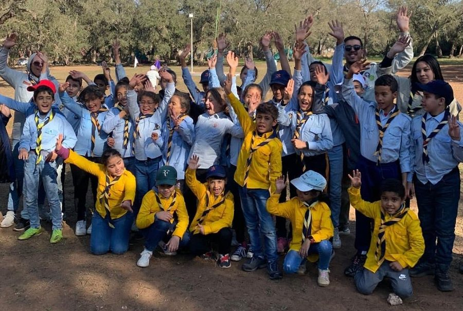
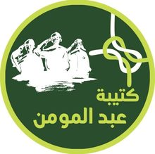
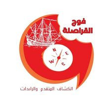
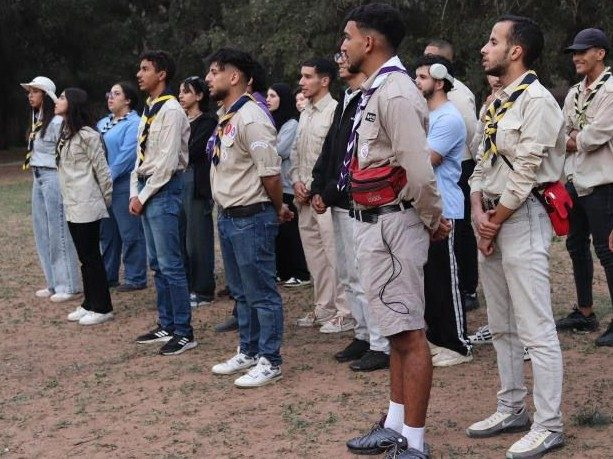

اكتشف أقسامنا
لكل مرحلة عمرية برنامجها التربوي الخاص

البراعم
الفئة العمرية: 6 - 8 سنوات
هنا تبدأ المغامرة الكشفية! من خلال اللعب والحكايات والأنشطة في الهواء الطلق، يكتشف البراعم العالم من حولهم، ويتعلمون الحياة الجماعية، وينمّون إبداعهم وفضولهم في جو من المرح والأمان.

الأشبال والزهرات
الفئة العمرية: 8 - 12 سنة
«الستة» و«الزهرة» هما قلب حياة الأشبال والزهرات. يستكشفون الطبيعة ويتعلمون التقنيات الكشفية الأساسية ويكبرون معاً وفق قانون الأشبال وقيم المشاركة والتعاون، مسترشدين بشعارهم: «نبذل جهدنا».


الكشافة والمرشدات
الفئة العمرية: 12 - 15 سنة
المغامرة تأخذ بعداً جديداً! داخل الطليعة، ينظم الكشافة والمرشدات مشاريعهم الخاصة، ويخرجون في استكشافات، وينمّون حس المسؤولية. إنها مرحلة الاستقلالية والتحديات الجماعية الكبرى، وشعارها: «كن مستعداً».


الكشاف المتقدم والرائدات
الفئة العمرية: 15 - 18 سنة
مرحلة المشاريع الكبرى والخدمة العامة. ينجز الكشاف المتقدم والرائدات «مقاولات» طموحة نافعة للمجتمع، وينخرطون بفعالية في الحياة العامة. إنه وقت وضع المهارات في خدمة الآخرين.

الجوالة والدليلات
الفئة العمرية: 18 - 25 سنة
«الجَوَلان» مسار شخصي وجماعي في آن واحد. يعمّق الجوالة والدليلات التزامهم الكشفي، ويتأهلون ليصبحوا راشدين مسؤولين وفاعلين، ويعيشون تجارب قوية قوامها السفر واللقاء والخدمة الدائمة، تحت شعار: «الخدمة».

القادة والقائدات
الدور: التأطير والتكوين
متطوعون شغوفون، يشكل القادة والقائدات «هيئة القيادة»، وهم المحرك الحقيقي للفرع. يكرّسون وقتهم وطاقتهم لتربية الناشئة، ومهمتهم المواكبة والتكوين وضمان جودة العمل الكشفي المقدم.